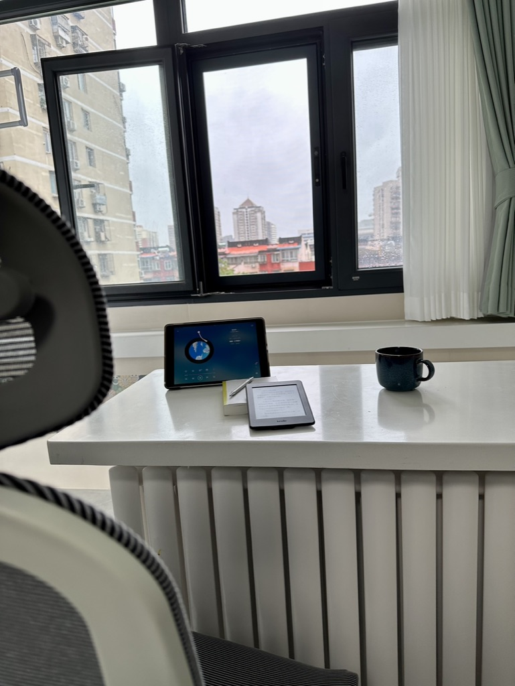
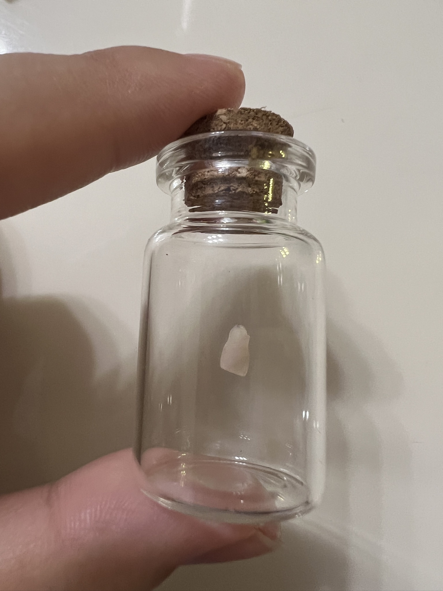

最近几天北京下暴雨，公司启动了远程办公模式，我之前好像在一篇文章中写到，相对来说我更喜欢到公司上班，因为去公司工作更有条理和规划，（基本上）能事先规划好每个时间段要做的事情，也能保持生物钟的稳定状态。
周末的时候，我整理了新家的吧台，然后在吧台旁看了一会书。

周一早上把电脑搬了过来，把吧台作为了一个可以观景的办公环境。

在家办公效率总觉得很低，主要有以下几个原因：
- 没有双显示器的辅助。我之前本来有一个外界显示器，是在19年买的，分辨率不怎么高，前段时间出咸鱼了。
- 总是想摸摸这里看看那里分散注意力。
- 还要考虑吃些什么，必要时还要做饭。
但在家办公又觉得事件过得很快，一天还没做什么事时间就过去了。因为登登的出生，加上念念幼儿园也放了暑假，家里人这段时间回老家了。家人也不在北京，工作上有没有非常紧急且具体的事情要做，晚上就很空虚。
躺在床上脉脉、小红书、Twitter 这三个轮番刷，刷到将近零点，放下手机后一阵巨大的失落感袭来。
我突然意识到，我的女儿现在已经五岁半了，明年就要上小学。想起了在我刚工作的时候有个前辈，那时候他的孩子大概也是这么大，他和我说这个时候的小孩是最好玩的，过了这个阶段再大一些就没这么好玩了。
我错过了念念最好玩的一段时间，前段时间她掉了第一颗乳牙，她把这颗乳牙放进一个小瓶子里，然后跟我发微信视频炫耀，我看到她的喜悦，可心里却酸酸的。

在生登登出生之前的很长一段时间，每个周末我都会抽出时间来陪念念玩一会，周日下午四点半还会带着她去上美术课，我们两个的小秘密是每次带她出门我都会买一瓶可乐和她分享，或者去 DQ 吃个冰淇淋。那段时间应该是我陪她最多的时候了，念念这么大了，我还没有带她去过远方旅行，所以打算今年国庆前后带她去一趟上海迪士尼，圆一次她的公主梦。
我们每个人都是小丑，一生当中就在玩这五个球：家庭、工作、健康、朋友和灵魂。五个球当中只有工作这个球是橡胶做的，砸下去还会弹起来，其他四个球是玻璃做的，砸碎了再也不会复原。
背负着北京的房贷，和家人暂时分居，我经常思考是否应该继续这样的生活，不知道这种生活还要坚持多久。我总是用「熬过这段时间，孩子们大一些就好了」这样的想法来宽慰自己。
我也有过回老家的想法，但面临着工资和生活习惯上的落差。我还琢磨过各种副业，想通过副业增加些额外收入，也避免自己被裁员后没有经济来源，但都由于各种原因（大部分是看不到赚钱的希望或者时间投入太多）最终都放弃了。
为了碎银几两，为了三餐有汤。希望现在的困难只是暂时的，就像北京当前的暴雨，终会拨云见日见彩虹。